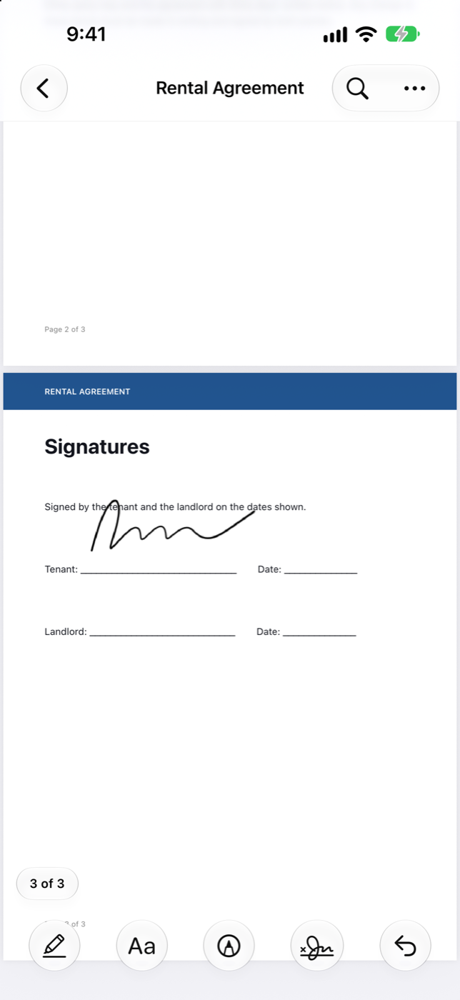
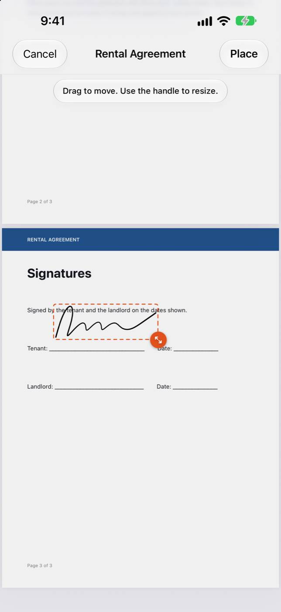
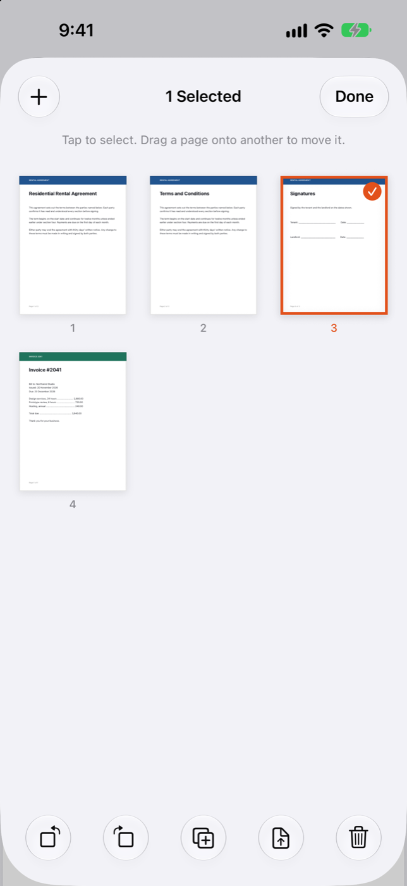
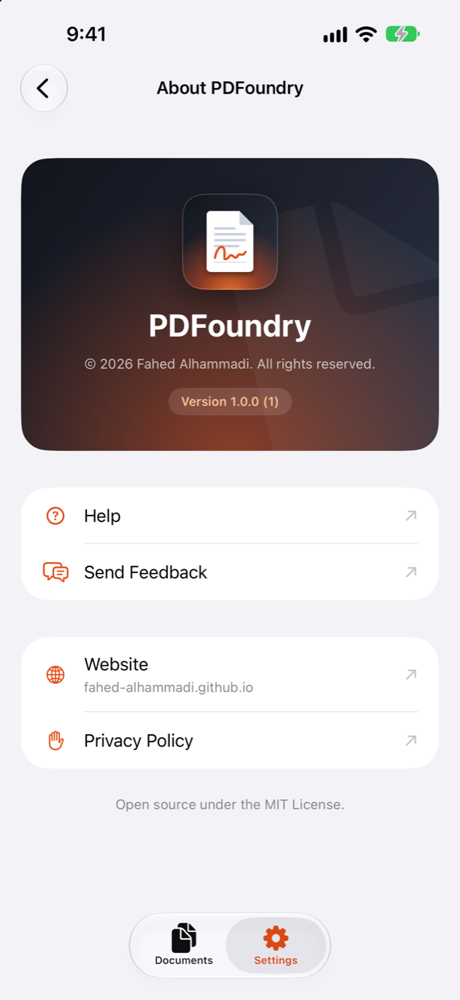

Read
Open PDFs from Files, Mail or Safari. Scan paper with the camera or build a PDF from photos. Search the text of any document.
Read, merge, edit and sign PDFs on iPhone and iPad. Everything stays on your device.


Open PDFs from Files, Mail or Safari. Scan paper with the camera or build a PDF from photos. Search the text of any document.
Pick two or more documents, drag them into order, and join them into a single PDF.
Highlight, underline and strike out text. Type notes, draw with a finger or Apple Pencil, and reorder, rotate, duplicate or delete pages.
Draw your signature once and reuse it. Drag it onto the line, resize it, and place it. It shows in every PDF reader.




PDFoundry has no account, no ads and no analytics. It never sends your documents or signatures anywhere. The only permission it can ask for is the camera, and only when you tap Scan.
Read the privacy policyFound a problem or have an idea? Open an issue on GitHub.